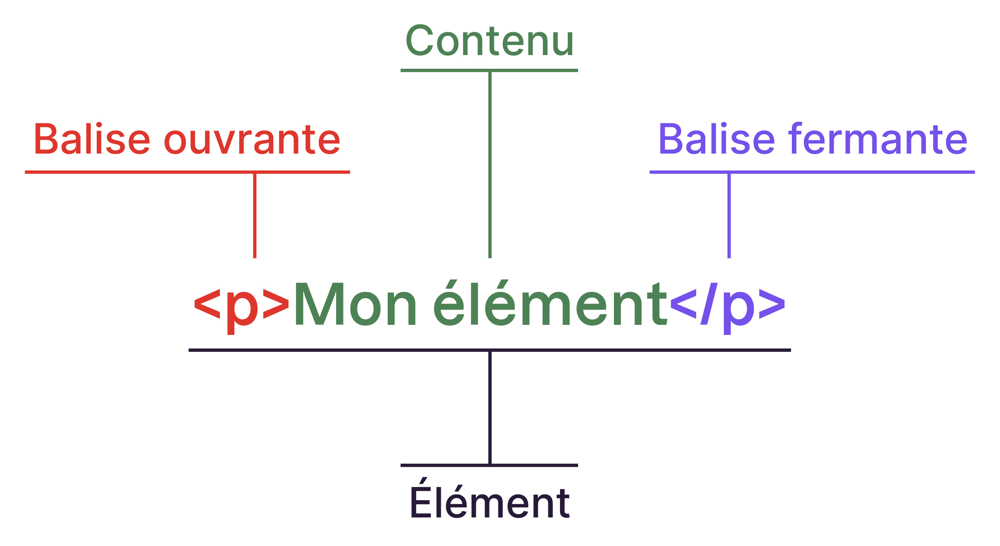
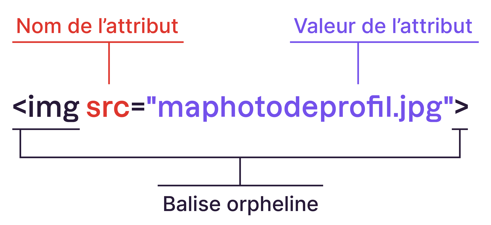

Le langage HTML utilise des balises pour structurer le contenu d'une page. Ces balises sont écrites entre les symboles chevrons < et >:
Le contenu d'un élément est placé entre une balise ouvrante et une balise fermante.
Par exemple, les balises de paragraphe sont utilisées pour entourer un paragraphe de texte.
Sur un PC, vous utilisez :
- La touche < pour faire le chevron ouvrant
- Maj + <pour le chevron fermant
Sur un Mac, vous utilisez :
- la touche < pour faire le chevron ouvrant
- et⇧ + < pour le chevron fermant
Les balises indiquent la nature du contenu qu'elles encadrent. Elles permettent au navigateur de comprendre ce qu'il doit afficher à l'écran pour les visiteurs d'un site web.
Si les balises pouvaient parler, elles diraient:
- <title> </title>: "Ceci est le titre de la page",
- <img>: "Ceci est une image",
- <p> </p> : "Ceci est un paragraphe de texte", etc.
On distingue deux types de balises :
- Les balises en paire, qui comprennent une balise ouvrante et une balise fermante.
- Les balises orphelines, qui ne nécessitent qu'une seule balise.(autofermantes)
Les balises en paire s'ouvrent, contiennent du texte, puis se ferment plus loin.
Par exemple, la balise title qui correspond au titre de la page s'écrit ainsi :
<title>. Ceci est le titre de ma page </title>
On a donc :
- Une balise ouvrante : <title>
- Une balise fermante : </title> .
Cela délimite ce qui sera interprété comme un titre. Pour l'ordinateur, tout ce qui n'est pas entre ces deux balises n'est pas considéré comme un titre.
Les balises orphelines, quant à elles, servent le plus souvent à insérer un élément à un endroit précis, comme une image. Il n'est pas nécessaire de délimiter le début et la fin de l'image, on veut simplement dire à l'ordinateur "Insère une image ici". Par conséquent, il n'est pas nécessaire de mettre une balise ouvrante et une balise fermante, d'où le terme "balise orpheline".
Une balise orpheline s'écrit ainsi : <img>
En plus des balises, nous utiliserons des attributs. Les attributs sont un peu comme les options des balises. Ils viennent compléter les balises en fournissant des informations supplémentaires.
Voici un exemple de liste avec des balises auto-fermantes
- <br> : retour à la ligne dans un paragraphe principalement.
- <hr> : un trait horizontal
- <meta> : balise de métadonnées inséré dans le <head>
- <img> : balise pour mettre une image
- <link> : pour mettre un lien vers un fichier, css ou js.
Un attribut est placé dans la balise ouvrante d'une balise en paire ou directement dans une balise orpheline, comme dans l'exemple suivant avec la balise <img> :
L'attribut src (pour source) est situé dans la balise img. Il est suivi du signe égal et précise entre guillemets la valeur à prendre en compte, en l'occurrence le nom du fichier de l'image.
- Certains attributs sont globaux = peuvent se mettre sur n’importe quelle balises. Par exemple id.
- Attributs spécifiques à une ou quelques balises. Par exemple src sur les balises <img>.
- La plupart des attributs sont facultatifs.
- Mais certains sont obligatoires. Par exemples href sur les balises <a>.
L'ordre des balises est important dans cette structure de base. Les balises s'ouvrent puis se ferment, et elles s'emboîtent les unes dans les autres dans un ordre précis.
Nous avons donc des éléments dits "parents" qui contiennent d'autres éléments dits "enfants". Cela fonctionne un peu comme des poupées russes :

La balise orpheline DOCTYPE est toujours placée en premier. Ensuite vient la balise en paire HTML. À l'intérieur, il y a les balises en paire HEAD suivies de BODY. À l'intérieur de HEAD, on trouve la balise orpheline META et la balise en paire TITLE.
La structure de base en HTML
Voyons à quoi servent toutes ces balises.
- La première ligne <!DOCTYPE html> est une balise orpheline indispensable : elle indique qu'il s'agit d'une page HTML.
- La balise en paire <html> </html> englobe tout le contenu de la page web. À l'intérieur, il y a les balises en paire <head> </head> et <body> </body>.
- La balise en paire <head> </head> contient deux balises qui fournissent des informations au navigateur : l'encodage et le titre de la page.
- La balise orpheline <meta charset="utf-8"> indique l'encodage utilisé dans le fichier .html. Cela détermine comment les caractères spéciaux s'affichent (accents, idéogrammes chinois et japonais, etc.).
- La balise en paire <title> </title> indique au navigateur le titre de la page web. Chaque page doit avoir un titre décrivant son contenu. Ce titre s'affichera dans l'onglet du navigateur et apparaîtra dans les résultats de recherche, par exemple sur Google. Autant dire qu'il est important de bien choisir son titre !
- La balise en paire <body> </body> contient tout ce qui sera affiché à l'écran sur la page web.
Un commentaire en HTML est un texte qui sert simplement de mémo. Il n'est pas affiché à l'écran, il n'est pas lu par l'ordinateur, et il n'affecte pas l'apparence de la page.
Les commentaires sont utiles pour les développeurs, y compris vous-même, et pour les personnes qui consultent le code source de votre page. Vous pouvez utiliser des commentaires pour ajouter des notes sur le fonctionnement de votre page. Cela vous aidera à vous rappeler comment fonctionne votre code si vous y revenez après une longue absence.
Comment écrire un commentaire?
Un commentaire en HTML est une balise avec une syntaxe particulière:
<!-- Ceci est un commentaire -->
Vous pouvez placer des commentaires n'importe où dans votre code source.
Attention, tout le monde peut voir le code HTML source de votre page une fois qu'elle est publiée sur le Web, en utilisant l'outil d'inspection du navigateur. Vos commentaires seront donc également visibles si quelqu'un affiche le code source de la page. Par conséquent, ne mettez pas d'informations sensibles comme des mots de passe dans les commentaires...
D'ailleurs, la plupart des éditeurs de code proposent un raccourci pour commenter rapidement une ligne de code.
Dans Visual Studio Code, par exemple, vous pouvez sélectionner une ligne (ou plusieurs lignes) de code, puis utiliser le raccourci clavier Ctrl + /.
Cela commentera la ligne de code en un seul clic.